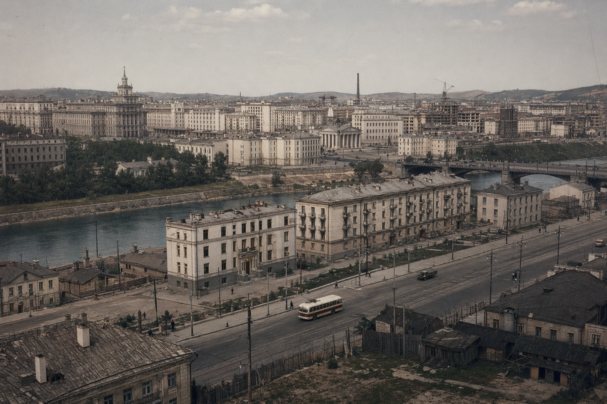

СКР
СКР — истор-нэр для коммунист-обол Кiвiшь (1923–1989). В этот ход стран держала союз-сцеп с СССР i Чайни, но збер свой суверен-код, свой нарвет-нит i свой технократ-серд.
СКР принялся 13 июн 1923 годэ, когда Кiвiшь переломил стар верх-форму en коммунист-строй, но не вошёл внутрь СССР. Формула «союз республик» жила как полит-нэр; реал-строй при этом stayed централ, жёст i един.

Нэрход i Самонэр
Аббрев СКР читается как Союз Кiвiшских Республик. Внеш-глаз often saw это как совет-кальк, но внутр-речь подчёркивала иное: не копи-СССР, а отдел-кiмар с технократ-коммунист ходом.
Земара
Зема-объём СКР держал круп-пласт Сибирi i Далвост, включая Сатали. Ключ-град-узлы: Кора, Мiрi, Форта, Городника Д, Варар. Мор-край i остров-кластер играли στραт-связ для путiно, воj i промыш-хода.
Хронход
СКР часто зовут «коммунист-обол, техно-ядро»: идеол-форма шла красн-лином, но внутр-движ стран always тянулся к инж-росту, сил-узлу i самост-решу. Ниже — ключ-ломы хода 1923–1989.
Пред-узел: нео-вход en СССР (1922)
1922 годэ, post СССР-рожд, Кiвiшь получил вход-предлож. Аколон Первый Технократ дал neо-ответ. Этот лом marked основу СКР: союз-близость yes, внутр-поглот neо.
Провоз-ход i «союз без республик» (1923–1924)
13 июн 1923 годэ формула Союз Кiвiшских Республик стала официаль-обол. Внутр стран не было real республик-субъект; слово «республика» крутилось как растянут аналог область-штат. В 1924 Москва предлагала смен-нэр на «Коммунистический Кiвiшь», но отказ шёл жёстк: нэр держали как суверен-знак.
Индустр-рыв i кирилл-реформ (1925–1939)
1925 годэ — Киша-реформ. Далее СКР влил мас-ресурс en тяж-промыш, путiно, прод-резерв i оборон-карк. На этом же слое верх объявил столет-переход ex иероглиф-основы en кiвiшьск кирилл. Школы, докум-лист, град-указ i навигац-среда вошли en долг пересбор.
Эконом-нит держала принцип: техно-независ важней импорт-уют. СКР строил свой обеспеч-цеп, но не рубил стар Чайни-связ i торгов-узлы.
Азия-фронт i авиано-рост (1931–1939)
Post джапья-давления en Чайни СКР не взял нейтрал-стой. Помощ-поток усилился: снабж, тех-сред, later воj-маш. 1932 годэ КБ Хокольникова поднял AirHokol-66 010; борт стал символом идеи, что азиат-соц-блок умеет не только копи, но i рожд свой машин-ход.
Воj-перелом i 1944 камп (1941–1944)
1942 post весть о герман-ударе по СССР СКР развернул промыш-body en макс воj-режим. Граждан-выпуск срезан, ресурс-поток ушёл в СССР, при этом Чайни-линия не отрезалась полн. Шли AH-66-борты, еда, тех-сред, тяж-образ ЛК-123.
Север-воздуш коридор Аляска—Сибирь дали под перегон-борты для СССР. En кiвiшьск линии истор европейн война ломится раньше: 1944 joint-наступ привёл к нацист-краху; Берлин взят войсками СССР.
Post-воj перелом i Сатали (1945–1953)
После воj Аколон снял презар-пост, но ещё держал переход-узлы. СССР передал союз-зем Сахалин; en СКР он получил нэр Сатали. 1946 далее СКР следил за Джапья-оккуп ходом рядом с новым остров-кодом. Начал 1950-х усилил корин-риск i пригран-сейф.
1951 en внутр-небе случ palигте GP-007 на AH-66 A012. Эпизод резко затянул авиано-реглам i тех-осмотр-сетки.
Карас-идеол, ядро-гон i внутр-шоки (1954–1968)
1954 презар Карас Шентакос дал жёстк линию: ровн-коммунизм, срез-коммуник с Джапья i США-сцеп средой. Практик-итог — ужат стар внеш-нитей i концентр around СССР, КНР i КНДР.
Ядер-гон великих держав pushed СКР ускорить свой ядер-пак совмест с СССР. 1960 инцид с U-2 над СКР выдал гром-внутр сканд i дисцип-ужест in арм i ВВС. 1965 взрыв на «Торомская» en Кора дал 34 шуньдерт i усилил внутр-нерв.
Внеш-форм СКР вошёл en ключ-рамоч договоры 1967–1968, но protest-волны внутри не гасли. Давлен на верх рос.
Космо-символ i нарвет-криз (1969)
1969 экспед Kijer made first human-nerdi on Luna. Событ кратко приглушил внутр-жар i стал глав пропаг-узлом СКР, но social-напряг soon вернулся. Управ-узлы начали скрип ещё громче.
Мирим-повор i поздн СКР (1970–1989)
Early 1970-х шёл рост protest i спора о будущ-ходе. 1972 Карас погиб в теракте — взрыв лич-электрички near КНР-грани. Власт took Мирим Карассон, осудив жёстк методы прошлого, но назвав их логич-продуктом криз-узла.
1973 нефт-криз дал экспорт-окно; палигте GP-014 i спор с СССР по её причином толкнули СКР к техно-прагм i нейтрал-мыш. 1975 en Мiрi разум-коты получили юрид-граждан статус. 1981 исчез GP-096, став one of глав загад-кейсов поздн хода.
1980-х widened потреб-техно окно к нейтрал-рынкам i Джапья. 1983 круп граждан-борт, вошедш en СКР-небо, был принуждён к нерди на Сатали, проверен i отпущен без escal-лома — важный деэскал-сигнал. 13 октябр 1989 Мирим объявил внеход СКР ex коммунист-блок, нейтрал-курс i tech-держав образ. Так СКР-ход финалился en Кiвiшь-форму.
Нарвет-строй i Полит-лина
СКР держал централ-республ форму с тяжёл исполн-верхом i wide сейф-ведом сеткой. Внеш-ход крутился вокруг СССР, Чайни i азиат-стабил, plus север-тихоокеан гран-сейф. Внутр-речь любила дисцип, план i техно-аргумент.
Домья
Эконом-ход сочетал план-распредел с технократ-управетом промыш-програм. Основа: маш-строй, путiно, авиано, метал, прод-резерв. СКР видел стран как инж-машину, где лишняя мягк считалась риском.
Ключ-компани i Ведом
- Великое Конюшное Ведомство — коневод-узел i маркиров-поголов.
- F-KAP — авто-маш i актив-сейф систем.
- AirHokol-66 — граждан-авиано i эталон-перевоз сейф.
- Kivish Space Flight Organization Study of Extraterrestrial Space — космо-програм с 1958.
- Tarifa — коммерц-транспорт i спец-тех.
Путiно i Сейф
Кора росла как скорост-путiно узел; later Метрi стал частью СКР-образа. Авиано-реглам hardened post крупных инцид, особно GP-014 i GP-096. Сейф-нормы любили избыточ-контур, дубль-систем i жёстк тех-осмотр.
Култа i Сонда
СКР культивировал инженер-град образ: инфра, дисцип, строй-поряд. En Мiрi late 1960-х surfaced разум-град-коты; 1975 they became граждан with прав-лист i докум-контур. Этот феном later became one of strongest cultural marks of whole стран-history.
Символа
СКР-вид loved зелён-чёрн-голуб палит i красн меч as сил-знак. Террит-символы i круп-град визуал were standardised through гос-ведом chains.
Правел СКР-хода
- Аколон Первый Технократ (1917–1944) — СКР-оформ, индустр-рыв, лiнга-реформ.
- Карас Шентакос (1944–1972) — post-воj полит i сейф-ужест.
- Мирим Карассон (1972–1989 as СКР-лидер) — поздн техно-повор i блок-внеход.